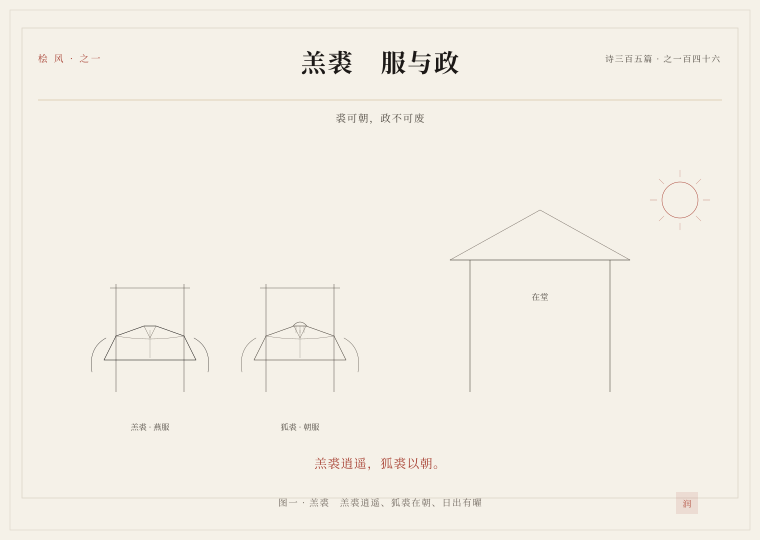
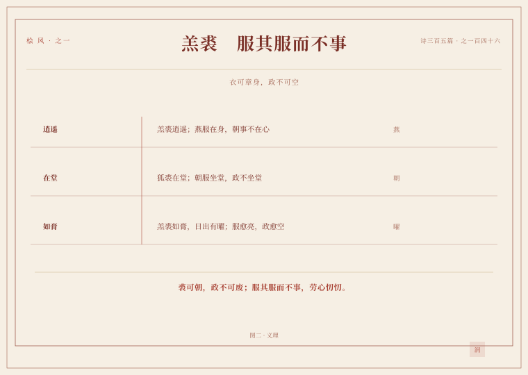

第一百四十六篇 羔裘
桧风 · 之一 SJ146
朗读 · 普通话
依经文原文朗读，章次不读出；配古琴底乐，不改速、不加拖腔。全库同一音色（豆包 TTS），非播音员录制。
一 解题
诗三判：
- 谁在说：桧国大夫。见其君羔裘逍遥、狐裘以朝，服饰愈盛而政事愈废，故以「岂不尔思」转出忧思。
- 说什么事：三章只写三身衣服：羔裘而逍遥，狐裘而朝，羔裘如膏而日出有曜。衣服一件比一件亮，朝堂一日比一日空。不是思其君，是思其国之无人理事。
- 为何编在此：桧风四篇以此为首。桧国小而迫于大国，君又好玩乐、好洁衣服，不能自强于政治；开卷先立「服」与「政」之辨，后三篇伤礼废、羡草木、思周道，皆从此根出。
《毛序》：「《羔裘》，大夫以道去其君也。国小而迫，君不用道，好洁其衣服，逍遥游燕，而不能自强于政治，故作是诗也。」
朱子《诗集传》：「赋也。羔裘，缁衣羔裘也；狐裘，朝服也。桧君好洁其衣服，逍遥游宴，而不能自强于政治，故诗人忧之。」二章：「翱翔，犹逍遥也。」三章：「如膏，谓光泽如脂膏也。曜，日光也。」
本库的看法：《羔裘》是一首把「服其服而不事其事」写成三身衣服的诗。
毛序说「大夫以道去其君」，朱子说「诗人忧之」，二说一出一留，其实同指：君可以穿上朝服，却不能把朝政穿起来。须辨：羔裘是燕居之服，狐裘是视朝之服；问题不在衣服华美，在「逍遥」「翱翔」「在堂」之后没有政事。
断语：裘可朝，政不可废；服其服而不事，劳心忉忉。
先辨五事：「羔裘」是缁衣羔裘，燕居所服，不是朝服；「狐裘」是朝服，不是狐皮赏玩；「朝」是视朝，不是朝拜；「翱翔」是游宴盘桓，不是鸟飞；「如膏」是裘面光泽如脂，不是膏油涂衣。
二 经文
第一章
羔裘逍遥，狐裘以朝。
岂不尔思，劳心忉忉。
第二章
羔裘翱翔，狐裘在堂。
岂不尔思，我心忧伤。
第三章
羔裘如膏，日出有曜。
岂不尔思，中心是悼。
三 韵读
- 一章：遥、朝、忉，宵部相叶。三字一韵，声缓而忧。
- 二章：翔、堂、伤，阳部相叶。转阳，声开而伤。
- 三章：膏、曜、悼，宵、药旁转。光泽愈亮，声愈沉。
读法：三章韵脚从宵而阳而宵药，正合「由燕而朝而衰」的往复；末字「忉忉」「忧伤」「是悼」，一章比一章重。
四 字义与名物
- 羔裘：缁衣羔裘，黑色羊羔皮裘，燕居之服。逍遥：游宴自适。狐裘：狐白裘，朝服。朝：视朝。
- 翱翔：犹逍遥，盘桓游宴。堂：朝堂。如膏：裘面光泽如脂膏。曜：日光。悼：伤悼。
- 忉忉：忧劳貌。忧伤：心忧而伤。岂不尔思：岂是不思念你；「尔」指其君。
五 今译
一章：穿着羔裘游宴逍遥，穿着狐裘来视朝。岂是我不思念你，劳心忉忉不得安。
二章：穿着羔裘盘桓翱翔，穿着狐裘坐在朝堂。岂是我不思念你，我心忧伤不能已。
三章：羔裘光泽如脂膏，太阳一出便见光耀。岂是我不思念你，中心伤悼不能止。
六 章旨
- 一章：羔裘而逍遥，狐裘而朝——燕服与朝服并见，游宴与视朝并置，君之「服」与「事」已经分开。
- 二章：羔裘而翱翔，狐裘而在堂——人已在朝堂，心仍在游宴；朝服成了坐堂的衣，不是理政的衣。
- 三章：羔裘如膏，日出有曜——衣服亮到极处，政事空到极处；末句「中心是悼」，悼的不是衣服，是国。
七 诗教
- 服以章身，政以章国：一身衣服可以整，一国政事不可以空。
- 思不是私情：「岂不尔思」三叠，思的是君能理事，不是思其衣服。
- 大夫之去：毛序说「以道去其君」，去不是弃，是礼；看得见衣服之盛，才看得见政事之废。
八 分寸与边界
- 不把「羔裘」读成奢侈罪证：羔裘、狐裘皆是礼制之服；诗刺在「逍遥」「不事」，不在衣料。
- 不把「思」读成男女之思：此篇「尔」指君，不是指美人。
- 不把桧君坐实为某一公：诗辞无谥号，毛序只言「君不用道」；所刺之人存参，所刺之事可定。
- 不把「大夫去君」读成叛：去是去位，不是去国；诗仍以「思」结，见其未忍。
九 存疑
- 诗旨：毛序「大夫以道去其君」，朱子「诗人忧之」。本库从毛朱，以「服其服而不事」为诗骨。
- 「羔裘」与「狐裘」：毛传以羔裘为朝服，朱子以羔裘为缁衣羔裘、狐裘为朝服。本库从朱。
- 「如膏」：一说裘面光泽如脂膏，一说油脂所涂。从光泽说。
- 所刺之君：桧国世次不明，诗无明文。存参，不指实。
十 跨典
- 《郑风·羔裘》以羔裘美大夫「舍命不渝」；此篇以羔裘刺君「逍遥不事」。同一衣，一美一刺，分别在「事」。
- 《论语·乡党》「缁衣羔裘」；《礼记·玉藻》「君衣狐白裘」——衣有制，朝有仪；有衣无政，则制存而义亡。
- 《左传》桧小而逼，终为郑所灭；此篇之忧，不是一人之忧，是一国之将亡。
十一 双卡与图
六对：
| 羔裘（缁衣羔裘，燕服） |
羔裘（朝服） |
| 狐裘（朝服） |
狐裘（玩好） |
| 朝（视朝） |
朝（朝拜） |
| 翱翔（游宴盘桓） |
翱翔（鸟飞） |
| 如膏（光泽如脂） |
如膏（涂油） |
| 岂不尔思（岂不思君） |
岂不尔思（男女相思） |

图一 · 羔裘 羔裘逍遥、狐裘在朝

图二 · 羔裘 服与政，两不相值